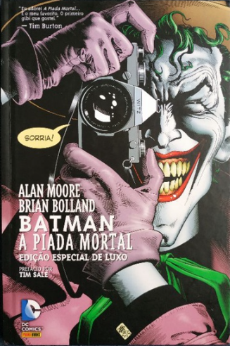

Batman: A Piada Mortal
Batman: A Piada Mortal é uma história em quadrinhos escrita por Alan Moore e desenhada por Brian Bolland, publicada pela DC Comics em 1988.
A narrativa se passa em uma Gotham City sombria e decadente. O Coringa, um psicopata obcecado por Batman, decide levar o herói à loucura. Ele ataca e mutila a Comissária Gordon, a fim de quebrar a mente de Batman.
Contada em uma série de flashbacks e vinhetas, a HQ explora a psique do Coringa e de Batman. A arte de Bolland é expressionista e sombria, e contribui para a atmosfera perturbadora.
É uma história violenta e perturbadora que explora a natureza da loucura e da violência. Uma reflexão sobre o que significa ser um herói em um mundo corrupto e insano. Uma obra influente que ajudou a redefinir o personagem do Coringa.
Comprar